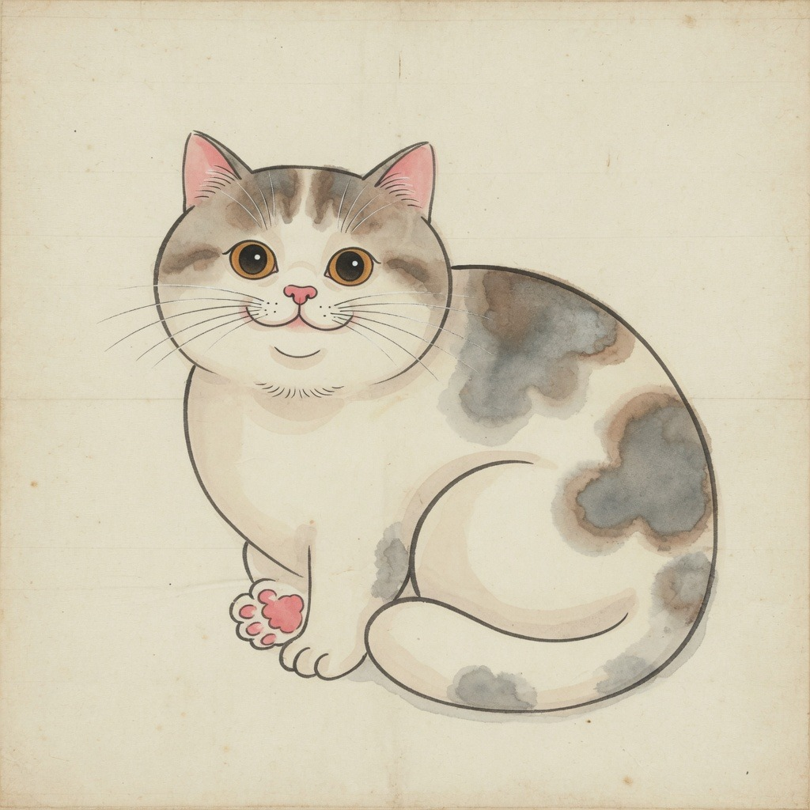

文
문해
Munhae Studio
버전 0.1.0 · Phase 1 로컬 CAT
새 프로젝트 만들기
.munhae 프로젝트 · 로컬 SQLite · 서버 전송 없음
⇧⌘N
기존 프로젝트 열기…
.munhae 또는 .munhaepkg 백업에서 복원
⌘O
훈민정음 데모 열기
御製序 원문·표점·번역안이 들어 있는 예시 프로젝트
실행할 때 이 창 표시
최근 프로젝트
데모 범위
— 원문은 『訓民正音』 御製序 실제 본문이며 번역·hash·시각은 화면 동작을 보이기 위한 예시값일 수 있습니다. 실제 LLM 호출은 M3에서 연결됩니다. OCR·협업·공유 서비스는 Phase 1 범위 밖입니다.
文
문해